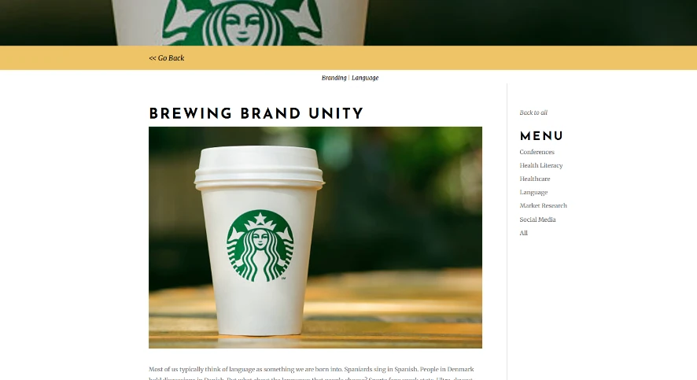
Brand voice & community
Brewing Brand Unity
A playful exploration of how shared vocabulary, from Klingon to coffee sizes, creates a sense of belonging around brands.
Read original article ↗How I helped transform Sommer Consulting's digital presence through two successive website projects, then managed its content and thought leadership program.
Sommer Consulting used sophisticated language research to uncover how people think, make decisions, and respond to messages. Its older website described the firm's methodologies in considerable detail, but the presentation left room for a more inviting, audience-centered story.
Our transformation took place in stages: a temporary one-page replacement, followed by a comprehensive WordPress website with clearer pathways to services, industries, case studies, and thought leadership.
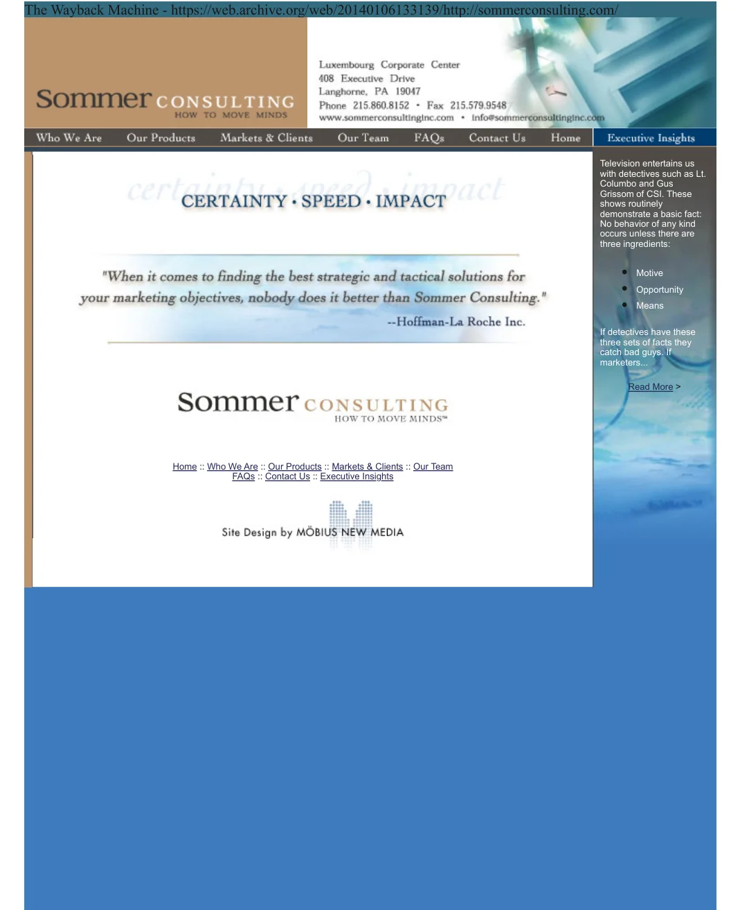
The first step was a temporary, single-page website that could replace the aging site while a more comprehensive solution was developed. I wrote all the copy; a Sommer colleague handled its layout and design.
Those opening questions moved the emphasis away from a catalog of methodologies and toward the challenges that brought clients to Sommer in the first place.
The interim website was designed as a single, continuous scrolling experience, with visual elements appearing and disappearing as visitors moved through the page. The images below capture that experience in sequence.
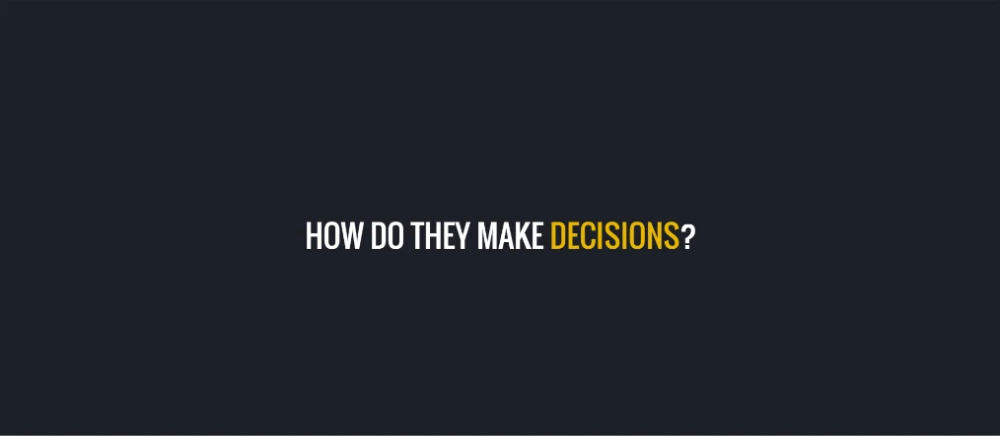
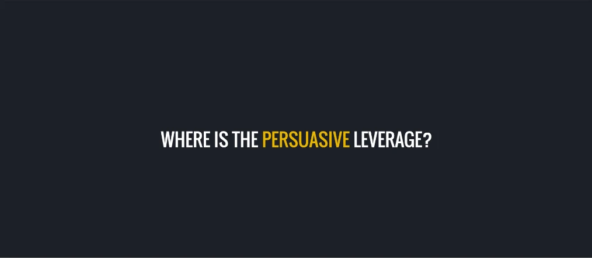
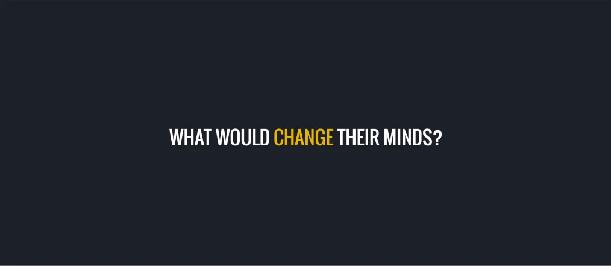
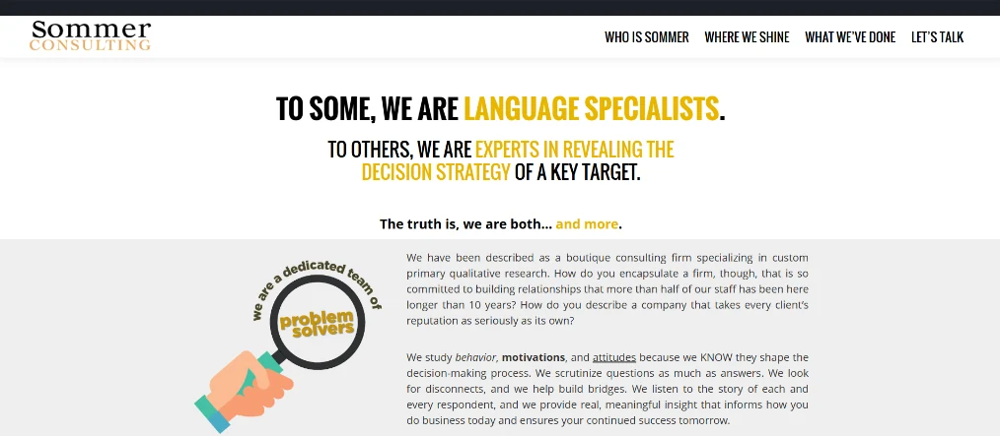
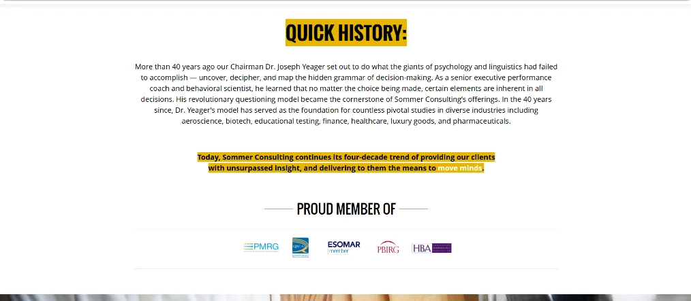
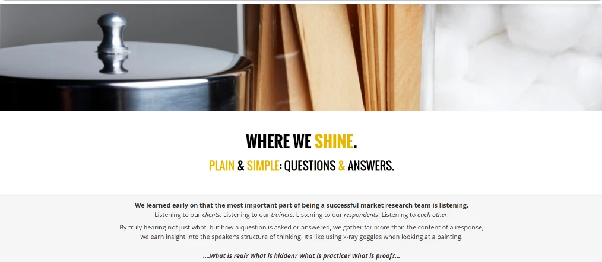
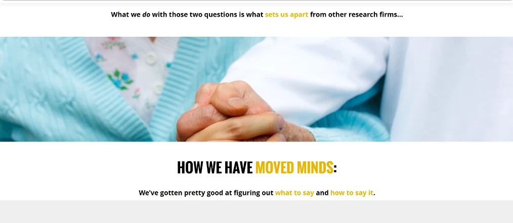
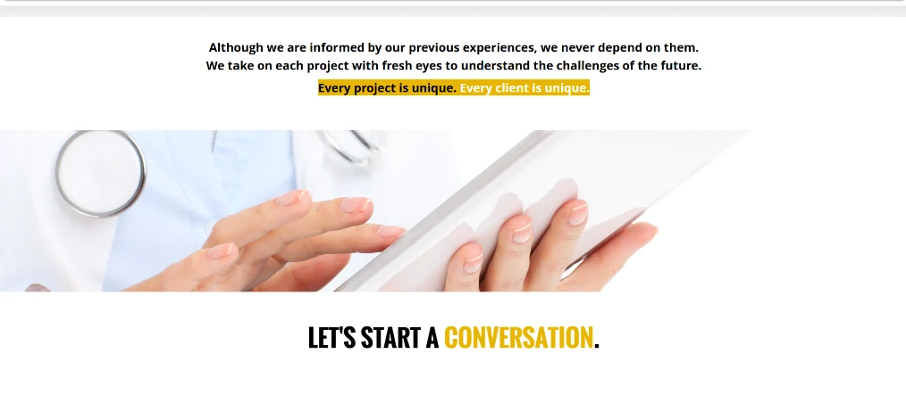
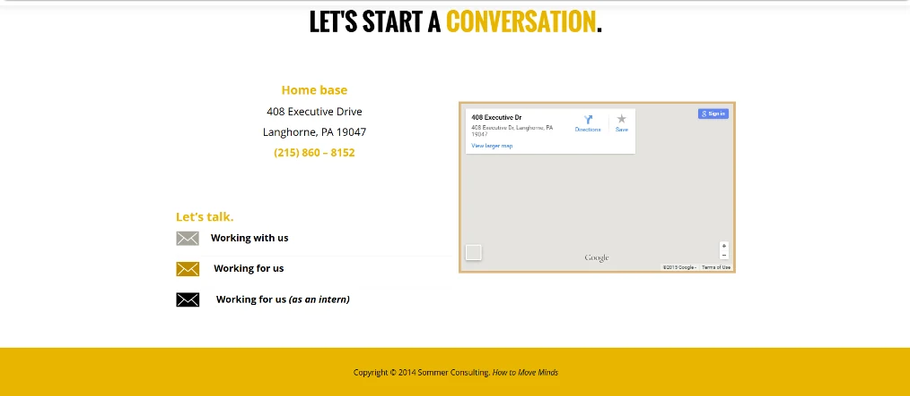
For the permanent website, I mapped the information architecture and wrote all the website copy. A developer built the site in WordPress. The new structure provided distinct paths into Sommer's work across pharmaceutical and healthcare research, technology, social intelligence, and health literacy.
It also gave visitors opportunities to explore case studies, perspectives, and recognition. Rather than requiring every visitor to start with a technical description of the firm's methods, the site offered entry points organized around their interests.
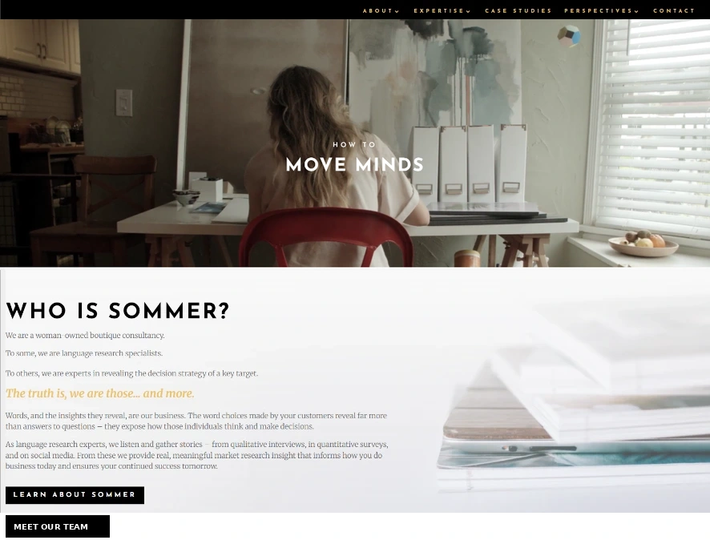
Across the redesigned site, I used approachable language to introduce specialized research capabilities and connect them to decisions clients needed to make.
Excerpt from the Technology page. The surrounding copy explains how qualitative research complements quantitative data to uncover customer motivations.
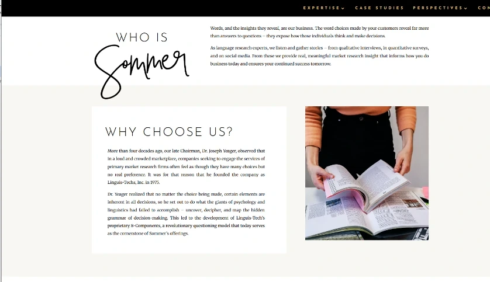
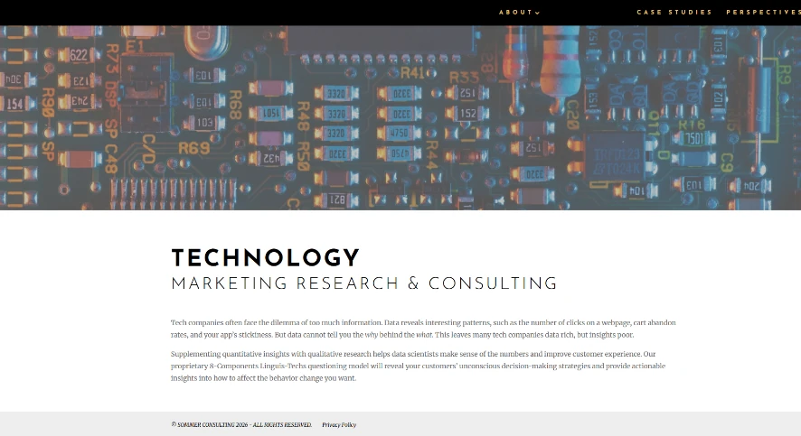
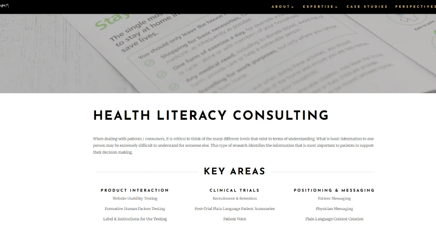
The Case Studies section helped prospective clients connect Sommer's capabilities to recognizable assignments. Examples included social media and lexicon analysis, patient journey research, and physician decision-making studies.
These stories provided a practical counterpart to the service descriptions, demonstrating how language research could inform outreach, messaging, and customer understanding.
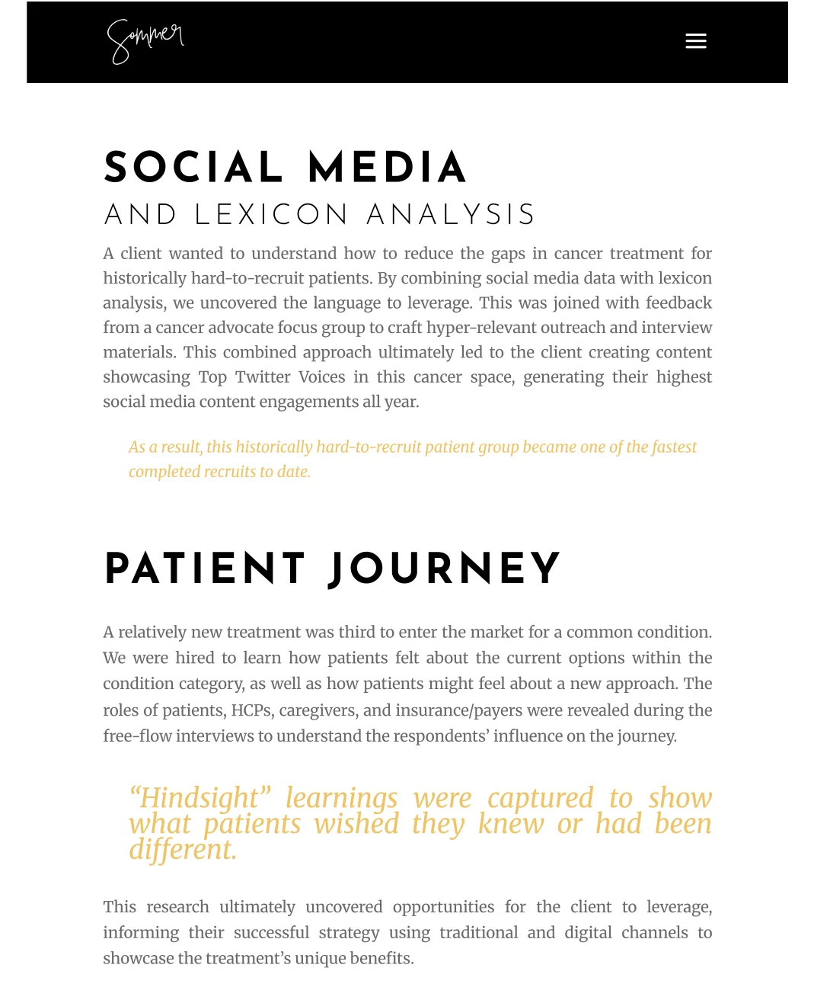
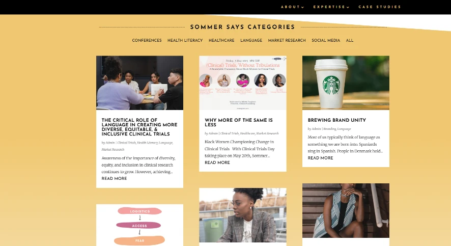
I created the name Sommer Says for the firm’s thought leadership blog. Nine published articles carry my byline, and I wrote several additional unbylined pieces out of the 20 total articles on the site. Visitors could browse older entries or explore the archive by subject category.
My role continued after the comprehensive website launched. As webmaster, I maintained the site through WordPress, updating content and regularly publishing new blog posts. My involvement extended beyond the initial writing and launch.
My articles for Sommer Says explored how language shapes brand identity, influences behavior, and affects people's ability to use complex information. These three featured pieces show distinct sides of my writing: creative brand storytelling, audience-centered persuasion, and clear explanations of technical product challenges.

A playful exploration of how shared vocabulary, from Klingon to coffee sizes, creates a sense of belonging around brands.
Read original article ↗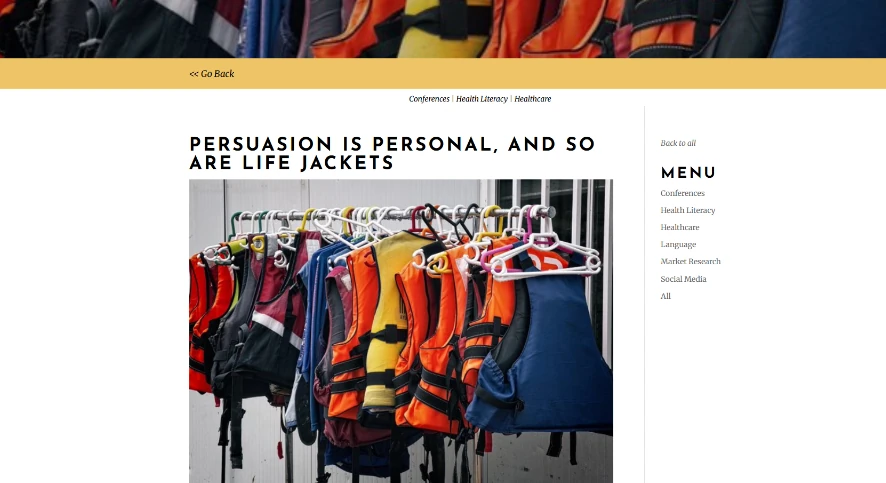
An unexpected example from Alaska illustrates why effective messaging starts with the values that matter to the audience.
Read original article ↗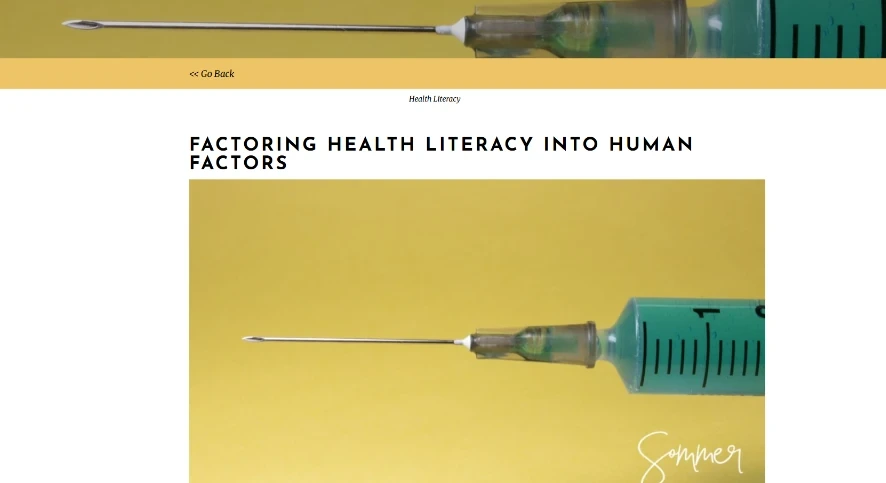
A self-injection scenario explains why observing user behavior is different from understanding the reasons behind it.
Read original article ↗These are original published articles. The portfolio excerpts describe the writing; the links lead to the full pieces on Sommer Consulting's website.
My role extended beyond communicating Sommer's credentials. I also contributed to the publications, speaking engagements, professional leadership, and award-winning collaborations that helped establish its reputation.
Counts reflect my contributions to the entries shown on the company's Recognition page as of November 2026. Group awards were collaborative; I was the only Sommer Consulting representative on those cross-company groups.
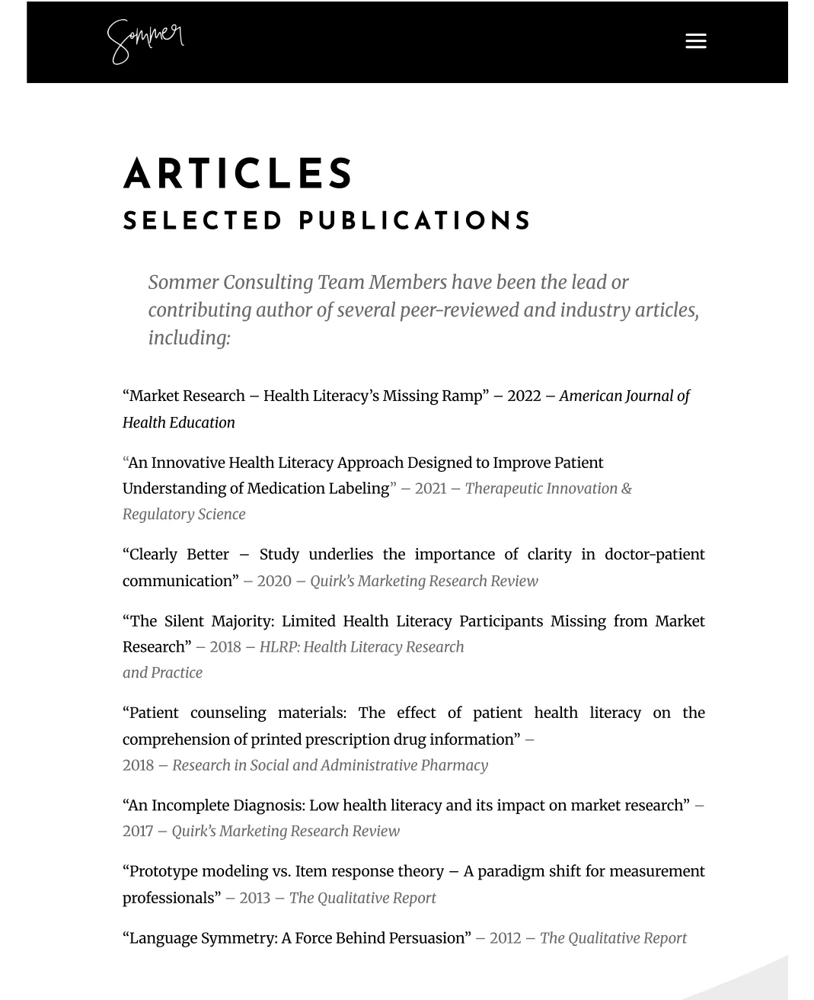
This project brought together my strengths as a hands-on writer, content strategist, and editor. I helped create an interim solution, wrote and organized the permanent website, collaborated with its developer, and managed the publishing program after launch.
The result was a more complete digital expression of Sommer's expertise, with accessible copy, a navigable content structure, examples of client work, and an ongoing editorial voice.
Visual sources: archived original and interim websites, plus desktop screenshots of the comprehensive WordPress site, which has remained substantially unchanged since November 2023.
← Back to selected writing